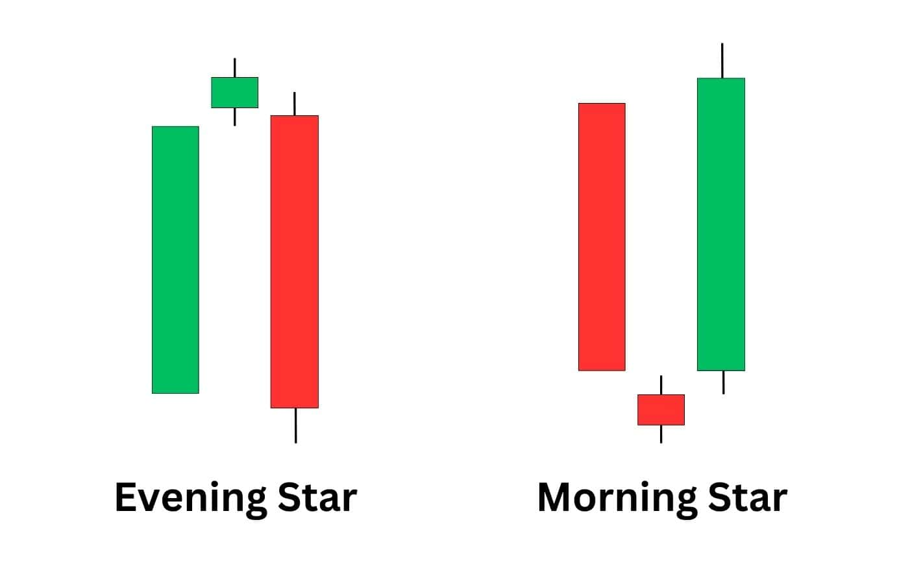
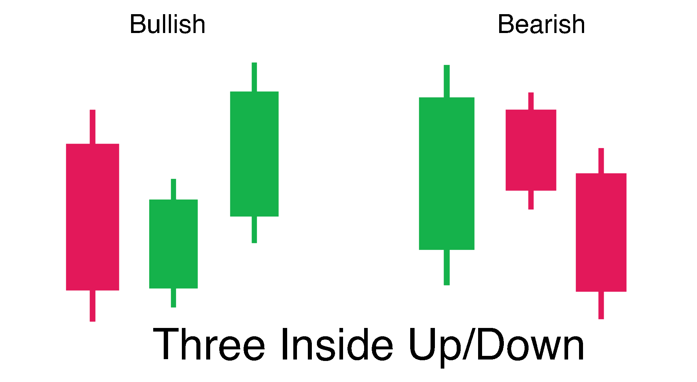
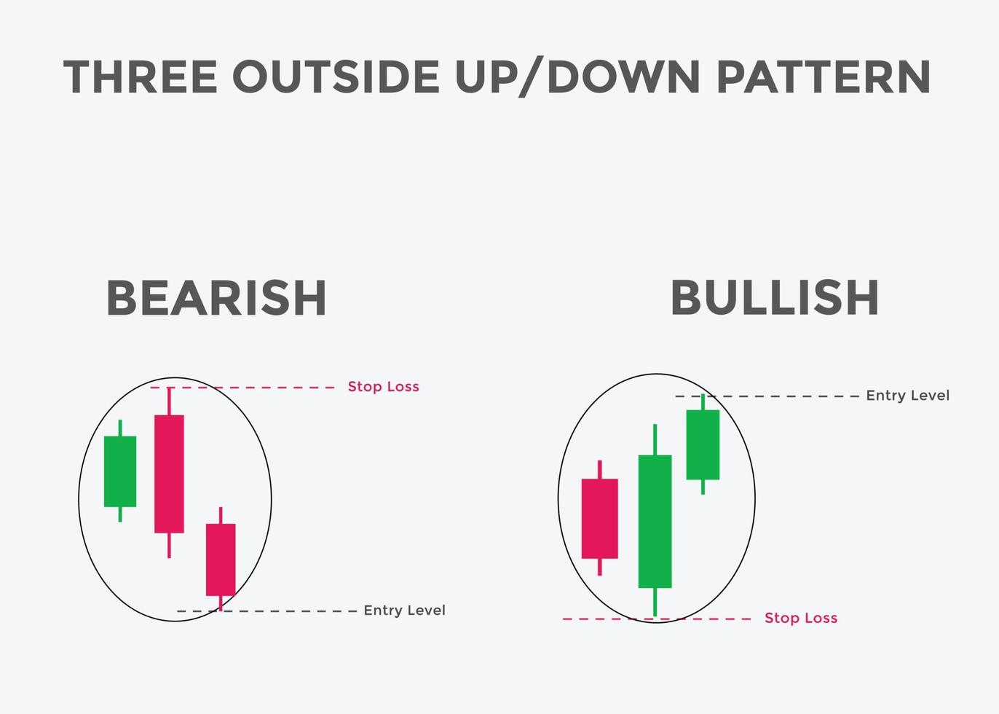

Тройни свещни модели в трейдинга (японски свещи)
Тройните свещни модели се състоят от три последователни свещи и са едни от най-надеждните
сигнали в техническия анализ. Те показват по-ясна промяна в пазарната структура и често
сигнализират за силен обрат или потвърждение на тренд.
Какво е важно при тройните модели?
- Последователността на свещите е ключова
- Средната свещ често показва нерешителност
- Третата свещ дава потвърждение на посоката
Основни тройни свещни модели
1. Утринна звезда (Morning Star)
Това е силен бичи модел, който сигнализира за обръщане от спад към възходящ тренд.
- Първата свещ е дълга червена (силен спад)
- Втората е малка (дожи или малко тяло) – показва нерешителност
- Третата е силна зелена свещ
- Третата свещ затваря над средата на първата
- Появява се след низходящ тренд
2. Вечерна звезда (Evening Star)
Обратното на утринната звезда – силен мечи модел.
- Първата свещ е дълга зелена
- Втората е малка (нерешителност)
- Третата е силна червена
- Затваря под средата на първата
- Появява се след възходящ тренд

3. Три бели войника (Three White Soldiers)
Модел, който показва силно възходящо движение и потвърждение на нов тренд.
- Три последователни зелени свещи
- Всяка свещ затваря по-високо от предишната
- Малки или липсващи долни сенки
- Показва силен контрол на купувачите
4. Три черни гарвана (Three Black Crows)
Мечи еквивалент на трите бели войника.
- Три последователни червени свещи
- Всяка затваря по-ниско от предишната
- Малки или липсващи горни сенки
- Показва силен натиск от продавачите

5. Три вътре нагоре (Three Inside Up)
Бичи модел, базиран на комбинация от вътрешна свещ и потвърждение.
- Първата свещ е голяма червена
- Втората е малка и вътре в първата
- Третата е зелена и затваря над първата
- Сигнал за обръщане нагоре
6. Три вътре надолу (Three Inside Down)
Обратното на Three Inside Up.
- Първата свещ е голяма зелена
- Втората е малка и вътре в първата
- Третата е червена и затваря под първата
- Сигнал за обръщане надолу

7. Три вън нагоре (Three Outside Up)
Разширена версия на бичото поглъщане.
- Първата свещ е червена
- Втората я поглъща (bullish engulfing)
- Третата потвърждава с ново по-високо затваряне
8. Три вън надолу (Three Outside Down)
Мечи вариант на предходния модел.
- Първата свещ е зелена
- Втората я поглъща (bearish engulfing)
- Третата затваря по-ниско

Как да използваш тройните модели?
Тройните модели са по-надеждни, защото включват потвърждение в самата структура:
- Изчакай третата свещ да се затвори
- Комбинирай с тренд и ключови нива
- По-силни са при високи таймфреймове
Колкото по-ясна е формацията и колкото по-силен е предходният тренд,
толкова по-голяма е вероятността моделът да работи.